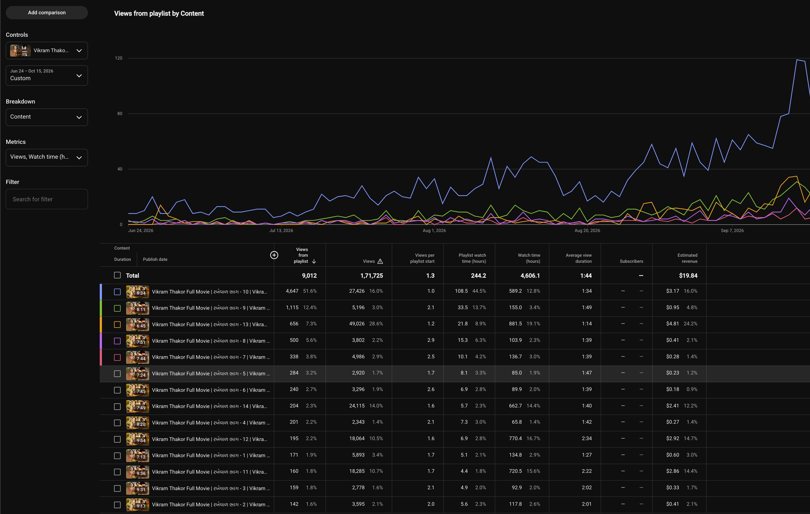
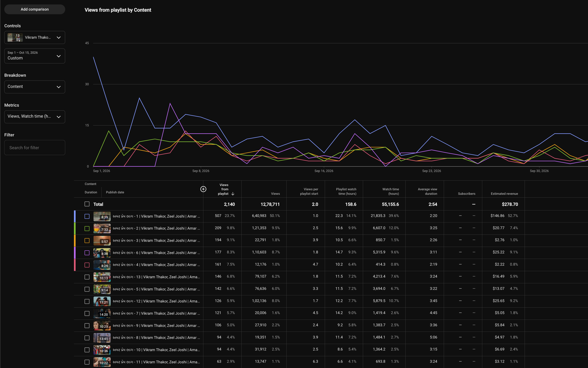
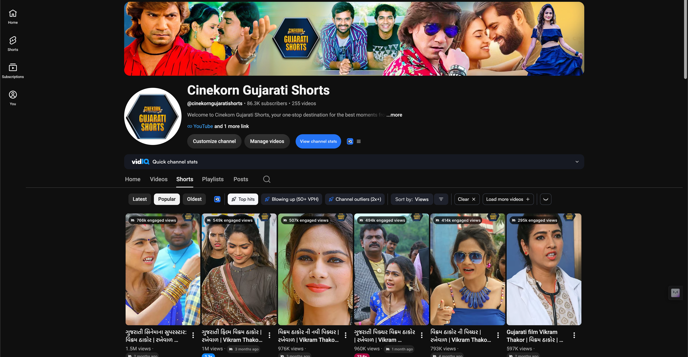
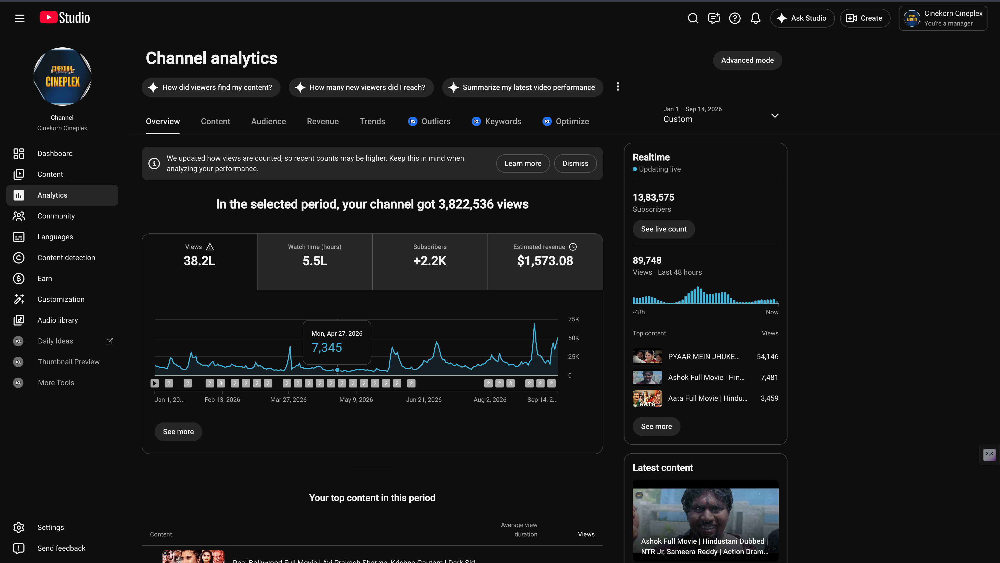
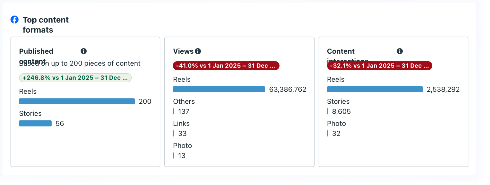

Case 04 · Gujarati multi-format distribution
One film, multiple release formats
How Gujarati catalogue assets were distributed through full releases, serialised parts, Shorts, and social cuts — with each format planned for a different watching job.
Context
A film can have more than one useful release format
Cinekorn Gujarati serves a regional Gujarati-speaking audience. Full releases, serialised parts, Shorts, and Facebook cuts each match different habits: complete viewing, return visits, discovery, and phone-first scroll. Treating every surface as a copy of the same upload wastes formats the same title can support.
Problem
A single upload path leaves reach on the table
When a title only goes out as a full film, the parts, Shorts, and social cuts that could keep the same story working across platforms never get built into the plan.
Strategy
Match the format to the job
Full release for complete viewing and SEO. Serialised parts for return traffic and playlist depth. Shorts for discovery. Facebook cuts for alternate reach and recovery windows. Tenure performance is tracked against that plan — not mixed into lifetime catalogue totals.
Titles that already travel well across platforms — notably Vikram Thakor catalogue films — are amplified through this packaging system rather than reinvented. Playlist analytics become the operating surface for how parts hold attention over time.
Accounts
Where the system runs
Evidence
Rakhewal — one film, multiple tracked outputs
Rakhewal was run across formats during tenure, with analytics kept as the operating surface rather than a single vanity total.

Radha Tara — original versus serialised re-release
Radha Tara Vina Mane Gamtu Nathi shows how a serialised parts plan can reopen a title beyond the original full release.

Vikram Thakor — playlist strength across parts
Vikram Thakor titles tend to perform across platforms. On YouTube, part playlists turn one film into sustained return viewing — the system amplifies a title that already travels.


Shorts as a discovery surface
Cinekorn Gujarati Shorts is treated as its own channel job — discovery and hooks — not a dump of every long cut. The analytics image anchors the Shorts lane without listing every clip.


Facebook recovery and format mix



Results
One title, multiple tracked distribution outputs
This case documents the packaging system and the evidence surfaces. Tenure views for specific films are reported where the archive supports a clear window; lifetime catalogue is not mixed into those claims.
Platform-specific underperformance and thumbnail tests are covered in Case 05 — so this page stays focused on the distribution machine.
Takeaway
Distribution is a packaging decision as well as a publishing decision
Format choice is part of the strategy. When full, parts, Shorts, and social cuts are planned together, the same title can work across platforms without treating every surface as a copy of the same upload.